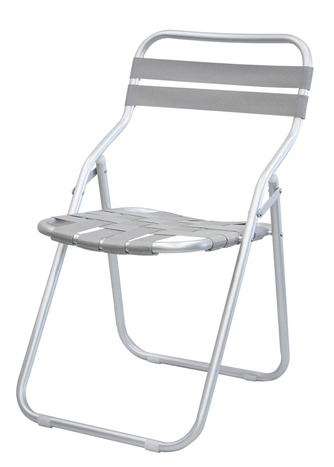

<div class="qv-media">
            <div class="qv-main">
            
        </div>
            </div>

<div class="qv-body">
            <p class="qv-cat">Rope / Strap ＆ Sling</p>
    
    <h2 class="qv-name" id="qvTitle">
                Bilc    </h2>

            <p class="qv-type">Side Chair</p>
    
    <div class="qv-meta">
                    <p class="qv-price">
                ¥19,000<span class="qv-price-note">（税別）</span>            </p>
                            <p class="qv-stock">
                <span class="pcx-dot" style="background:#A3E635"></span>
                限定品            </p>
            </div>

            <p class="qv-desc">屋外での耐久性能を保ちながらベルトの肌触りや座り心地を重視したモデルです。</p>
    
            <dl class="qv-spec">
                            <dt>サイズ</dt>
                <dd>W450 / D540 / H770 / SH390</dd>
                            <dt>重量</dt>
                <dd>1.8kg</dd>
                            <dt>素材</dt>
                <dd>フレーム：アルミアルマイト仕上<br />
シート：ベルト張り（P.P.）<br />
バック：ベルト張り（P.P.）</dd>
                            <dt>カタログページ</dt>
                <dd>P.238</dd>
                    </dl>
    
    
    <div class="qv-actions">
        <a class="qv-more" href="product-98.html" data-no-quickview>
            詳細ページを見る <span aria-hidden="true">→</span>
        </a>
            </div>
</div>
